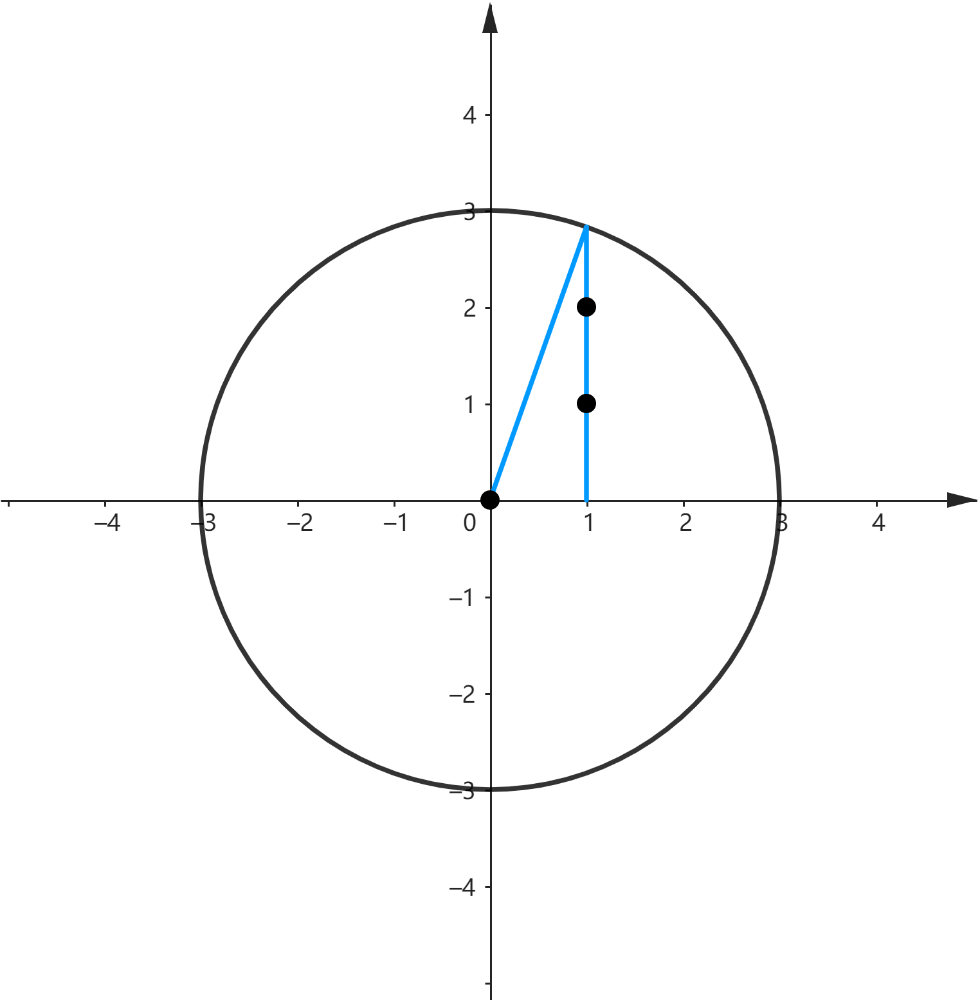

Codeforces 2074D Counting Points
题目
在 平面上，有 个圆心位于 轴的圆，圆心坐标分别为 ，半径分别为 ，圆心坐标和半径均为整数。另外，所有半径的和为 ，即 。求在圆内或圆上的整点个数。
输入
第一行为一个整数 ，表示数据的组数。
对于每组数据，第一行为两个整数 和 。
第二行为 个整数， ——圆心的坐标。
第三行为 个整数， ——圆的半径。
保证所有 之和不超过 。
输出
对于每组数据，输出满足条件的整数点的数量。
样例
输入 #1
4
2 3
0 0
1 2
2 3
0 2
1 2
3 3
0 2 5
1 1 1
4 8
0 5 10 15
2 2 2 2输出 #1
13
16
14
52分析
首先可以想到将所有点分为在 轴上的点和在 轴两侧的点来计算，其中在轴两侧的点只需计算一侧再乘 即可。
对于只有一个圆的情况，要计算某个 坐标处被圆覆盖的整点个数，可以直接用 来计算，其中 和 分别为圆的半径和圆心坐标，如图：
由于圆之间会产生相互覆盖，因此计算一个 坐标处的整点个数需要对所有圆都计算一遍，然后取最大值，时间复杂度 ，显然会 T。
如果能将不会覆盖到此位置的圆排除，那么时间复杂度会下降到 ，可以接受。
考虑将所有圆按照左端点排序，并用一个指针从左到右扫描（表示正在求整点个数的 坐标），用一个队列记录对当前坐标有影响的圆。每次指针右移时都让已经无影响的圆出队，这样可以保证每个圆占据的 坐标只被扫描一次。由于需要排序，时间复杂度 。
另外，如果被扫描到的圆的右端点坐标小于等于当前队尾圆的右端点坐标，则不需要入队，因为这个圆一定被队尾的圆包含，对答案没有贡献。
完整代码
using namespace std;
struct info {
int l, r, o;
int d;
auto operator<=>(const info &rhs) const { return l <=> rhs.l; }
auto operator==(const info &rhs) const { return l == rhs.l; }
};
void solve() {
int n, m;
cin >> n >> m;
vector<int> x(n);
for (auto &i : x) {
cin >> i;
}
vector<int> r(n);
for (auto &i : r) {
cin >> i;
}
vector<info> v(n);
for (int i = 0; i < n; i++) {
v[i] = {x[i] - r[i], x[i] + r[i], x[i], r[i]};
}
ranges::sort(v);
long long L{}, side{};
for (int i = 0, j = 1; i < n; i = j) {
deque<int> q;
q.push_back(i);
int k = v[i].l;
while (q.size()) {
while (j < n && v[j].l <= k) {
if (v[j].r > v[q.back()].r) q.push_back(j);
j++;
}
int maxh{};
for (auto id : q) {
long long d = abs(k - v[id].o), D = v[id].d;
maxh = max(maxh, (int)sqrt(D * D - d * d));
}
side += maxh;
L++;
k++;
while (q.size() && k > v[q.front()].r) {
q.pop_front();
}
}
}
cout << L + side * 2 << '\n';
}
int main() {
cin.tie(0)->sync_with_stdio(0);
int t;
cin >> t;
while (t--) {
solve();
}
return 0;
}语法踩坑记录
最开始写的结构体为：
struct info {
int l, r, o;
int d;
bool operator<(const info &rhs) const { return l < rhs.l; }
};
vector<info> v(n);结果发现使用 std::ranges::sort(v) 报错。查了 cppreference 发现 std::ranges::sort 要求比 std::sort 更加严格。
std::ranges::sort 要求迭代器满足 std::sortable 概念，尝试添加了代码：
static_assert(std::sortable<std::vector<info>::iterator>); //失败发现确实发生了静态断言失败。
继续查 cppreference，发现 std::sortable 概念由 std::permutable 和 std::indirect_strict_weak_order 组成，填入相关参数使用静态断言尝试了一下，发现前者成功，后者失败，这就很奇怪了，这个关系明明是满足严格弱序的。
static_assert(indirect_strict_weak_order<ranges::less, vector<info>::iterator>); //失败又研究了很久，发现只要把 ranges::less 改为 std::less 就成功了……？再次查 cppreference，在 ranges::less 的 Notes 部分找到了这样的描述：
Unlike std::less, std::ranges::less requires all six comparison operators <, <=, >, >=, == and != to be valid (via the totally_ordered_with constraint).
原来 ranges::less 不会像 std::less 一样直接调用 < 来比较，还会检查是否以上六个符号都被定义。
那么应该把结构体改为：
struct info {
int l, r, o;
int d;
auto operator<=>(const info &rhs) const { return l <=> rhs.l; }
auto operator==(const info &rhs) const { return l == rhs.l; }
};这样就可以使用 ranges::sort 了。